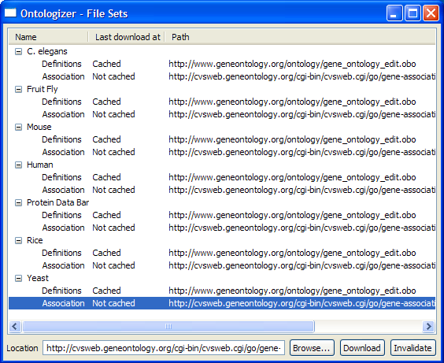

Ontologizer Tutorial
Setting Up the Ontologizer
-
Download the file http://compbio.charite.de/tl_files/ontologizer/examples/yeastSampleFiles.zip and unpack it into a directory of your choice, e.g,
the desktop. The archive contains sets of genes up- or downregulated following treatment with sulfometuron methyl, which is an inhibitor of amino acid biosynthesis. Data
was gathered from Jia et al. (2000) Global expression profiling of yeast treated with an inhibitor of amino acid biosynthesis, sulfometuron methyl.
-
If you need a proxy to access the internet, please open the Preferences Window via the Window > Preferences... menu entry within Ontologizer.

-
Enter your proxy configuration in the appropriate line and then press Ok.

Downloading the Files for the Tutorial Project
- For GO analysis, two sources of information (files) are required.
- The gene_ontology_edit.obo file contains definitions of individual GO terms
such as Development or DNA helicase. We will refer to this file as the definition file.
- A species-specific association file. Such files have been produced for a number of organisms and are listed at the GO homepage http://www.geneontology.org. For example, the association file for yeast (Saccharomyces Genome Database) is gene_association.sgd.
-
The Ontologizer can automatically download the definition file (gene_ontology_edit.obo) and several predefined association files (e.g. for
human, mouse, fruit fly, yeast, and PDB) from the web in the background. As we will see, the Ontologizer downloads these files automatically from the web,
but if the user desires, files can also be downloaded by hand and loaded into the Ontologizer using a standard file selection dialog.
- The GO website (http://www.geneontology.org) contains downloads for the GO definition file as well as association files for numerous other organisms.
- Before starting this tutorial, we recommend that you download the definition file and the association file
using the automatic download wizard in order to check your internet and (if applicable) proxy configurations. Open the Work Set Window by using the
Window > File Sets... menu entry.
-
Within the tree, look for an item called Yeast. Click on the Definitions entry within this subtree and then the Download Now button. Repeat this with the
Association entry. Both files should be downloaded now. If an error occurs, check your internet connection and verify the proxy settings. On success the second column should
change to "Cached".

File Sets
- Each File Set contains a definition file and an association file. Each project uses a File Set to perform the analysis. This is done so that users
can manage different file configurations easily, allowing for instance different versions of the definition file to be used for different projects,
as it may be useful to use the same version of the definition file (which is frequently updated at the GO website) for development.
User-Supplied Files
- In order to analyze your experimental data, you need to prepare one file for each of the groups of interest in your experiment (For instance, this might be a list of genes differentially expressed at different time points). We refer to such groups as study sets. Additionally, you need to indicate the population set. In general, this will be a list of all genes that were test (for instance, all genes represented on a microarray). The genes should
be listed one on a line in plain text (Alternatively, FASTA files can be used if desired if the name of the gene directly follows the '>' sign).
- For this tutorial, you can download the yeast study and populations files from the Ontologizer website: http://www.charite.de/ch/medgen/ontologizer/howto/index.html. Unpack these files before use.
Creating a New Project
- In order to create the new project, press the New Project button within the toolbar of Ontologizer's main window or select
the Project > New > Project... menu entry.

- This brings up the New Project Wizard. First enter a name for the project. For the tutorial,
enter suflometuronMethyl into the Project Name textfield then press the Next button to proceed to the next page.

-
Here you need to indicate the
definition file (via the Ontology text field) and the association file (via
the Association text field). The Ontologizer comes with predefined File Sets for frequently
used species that can be automatically downloaded. We have downloaded the File Set for Yeast above. If we hadn't, the Ontologizer would
now automatically download these files in the background. For this tutorial, click on the File Set combo box and choose Yeast. Then press
Next which brings you to the Population Edit page.

-
Now enter the genes of the population set. Use the study set/population set example files downloaded from
the Ontologizer homepage as described above.
Drag & Drop the file called
population.txt into the gene editor field or use a File Selection Dialog by clicking on
the Append Set... button. Notice that names of genes with GO annotations are highlighted (you may have to wait
for completion of downloads or parsing before seeing highlighting). You can hover the mouse over these entries to see more
information about the gene's annotation. Proceed by clicking on the Next
button.

-
Drag & Drop a study file into editor area (again, alternatively, you can use a
file selection dialog by clicking on the Append Set... button). Press Next and repeat the procedure for each study set (file).

-
Press Finish when you added the last study set. The New Project Wizard window closes and
you should now see your new project suflometuronMethyl appearing in the main
window.
Performing the Analysis
The Ontologizer offers multiple methods for searching for GO term overrepresentation and for multiple testing correction. For more information
on these topics please consult the Ontologizer homepage, where you will also find links to publications describing the Ontologizer. For the purposes
of this tutorial, we will use the Parent-Child Union Methods with a Bonferroni multiple testing correction.
- Within the main window, select our project which is sulfometuronMethyl.

- From the combo boxes in the tool bar, choose a calculation method (first combo box), Parent-Child-Union and
and the Bonferroni a multiple test correction (second combo box). Then press Analyze.
Exploring the Results
-
The Results Window now appears. Depending on the size and number of the study sets and the type of multiple testing correction desired, the
analyis should complete in a few seconds to a few minutes. As individual study sets are completed, new tabs appear with the results. If you have used
all the files of this tutorial, you should see seven tab folders corresponding to the name of the study sets
once analysis is completed. The first study set is activated and within the tab folder the results are presented in form of a table.

-
Notice that the background of terms whose adjusted p-value falls below the significance level
(as given by widget below the table) is colorized according to the sub-ontology and the rank.
-
Now click on one of the terms, e.g., amino acid and derivative. This refreshes the browser of the bottom part in the window to contain
information about the term including the parents (more general terms), children (more specific terms) or the names of the genes, to which the term is
annotated to.
-
To get a graphical overview, press the Preview Graph button (the third from left in the toolbar).
-
The graphs consists of all active terms as defined by
the little checkboxes before every time, which by default are all signifcant terms.
-
The parameter of the graph view (i.e., zoom factor, which extend is displayed) can be altered the button or context menu commands.
-